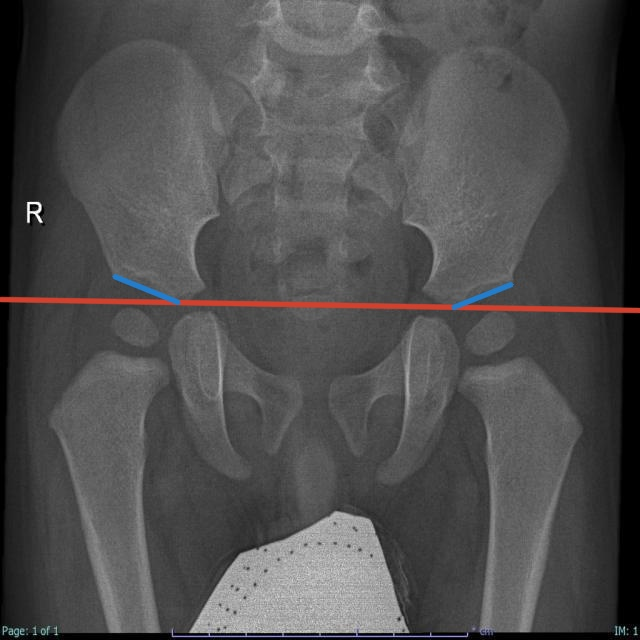

Featured model
DislocPred
DDH keypoint model.
My YOLOv11 pose model, packaged with a real local inference service—not a third-party model call.

Best11.pt · YOLOv11 pose
Local model.
Real service.
Python · Ultralytics · PyTorch · FastAPI · Docker
Local model demo
Run an image through the bundled model.
Checking local model service…
Research prototype only. Not for clinical diagnosis or treatment decisions.